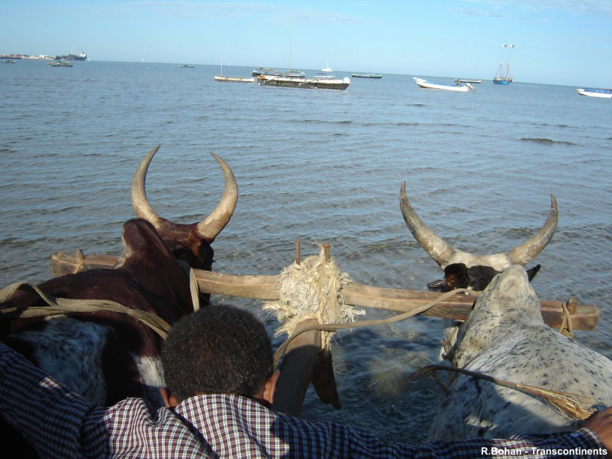

Tuléar, capitale de la région sud
Tuléar est la capitale de la région sud de Madagascar, on la nomme aussi Toliara. Bercée par le soleil toute l’année, elle vous offrira une richesse culturelle sans précédent. Vous partirez à la découverte de la population, à la fois chaleureuse et accueillante, cela vous laissera des souvenirs inoubliables dans un cadre incroyable. Profitez des plages de rêve de la région, sur lesquelles farniente sera votre quotidien.
La cité du soleil
Tuléar
À l’extrémité de la RN7 et longeant le Canal du Mozambique se trouve Tuléar. Une incroyable mosaïque d’ethnies, la ville vous offre un arc-en-ciel de couleurs vives dans une ambiance endiablée, rythmée par la musique tsapiky qui remplit les rues et dévoile la sympathique convivialité des habitants de Tuléar. Vous pourrez vous cultiver notamment avec leurs nombreux musées. Le musée maritime sur la route du port de commerce qui abrite des collections de coquillages et de fossiles. Le musée des arts et traditions Mahafaly, que vous devez impérativement visiter, car il retrace l’évolution de l’artisanat et des coutumes du Grand Sud. Mais à part les endroits culturels, Tuléar rayonne par ses nombreux bars et restaurants dans lesquels vous apprécierez les saveurs locales venants à
la fois d’Inde, de Chine et d’Europe.Toliara a connu au cours des deux dernières décennies un boom démographique en raison d'un exode rural massif portant l'agglomération à plus de 200 000PopulationLes Vezo, pêcheurs nomades, constituent le groupe ethnique autochtone mais ils sont en passe d'être dominés par les groupes de migrants notamment originaires du Sud (Mahafaly, Tanàlana, Masikoro, Antandroy) qui forment actuellement plus de la moitié de la population urbaine. À ceux-ci s'ajoutent d'autres groupes de migrants occupant des fonctions dans l'administration et dans le secteur privé.

Haut de la page
Honko, réserve des mangroves
Située entre Tuléar et Ifaty, Honko réserve est une importante réserve écologique de mangroves. Vous pourrez voir 7 espèces de palétuviers et 35 espèces d’oiseaux rares. Une visite guidée vous permettra de vous familiariser avec la mangrove et de profiter d’un point de vue remarquable au-dessus du canal. Un paradis pour sportif : Kayaks, randonnées ou trekking de quoi satisfaire vos besoins de sports et d’espaces verts. De plus, la visite de la réserve contribue à la préservation et à la protection des écosystèmes forestiers de la mangrove du Sud-Ouest.